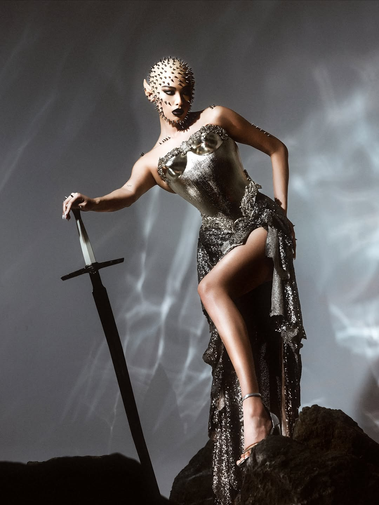

Michelle Dee's second Halloween costume comes after her reveal of the marionette costume she wore for The New Nocturnals Halloween party.
Michelle Dee definitely had during the Halloween celebrations as she revealed another Halloween costume on her social media.
In one of the more recent posts on her Instagram account, Michelle shared a photo of her wearing the Halloween costume she wore to the 2025 Shake, Rattle, and Ball held in Space at One Ayala. In the caption to the post, Michelle shared she conceptualized this elf costume, while designer Job Dacon brought it to life.
Michelle also shared in the comments that putting on the costume took five hours, while humorously writing that it was difficult to go bald.
This is the second Halloween costume that Michelle has revealed, as she had earlier posted about her marionette costume that she wore to The New Nocturnals Halloween party. In her Instagram post, she wrote that the outfit was made by designers IÑIGO and Jan Garcia.

Last year, Michelle's Halloween outfit was dressing up as international artist Beyonce, specifically as the latter's Cowboy Carter persona from the album of the same name.
The weekend's Halloween celebrations have been a welcome break from the busy few months that Michelle has had. Earlier this month, Michelle was announced as one of the presenters at the Filipino Music Awards held last October 21 at the SM Mall of Asia Arena. She joined other presenters like Razorback's Kevin Roy, Wolfgang's Basti Artadi, and Eraserhead's Ely Buendia.